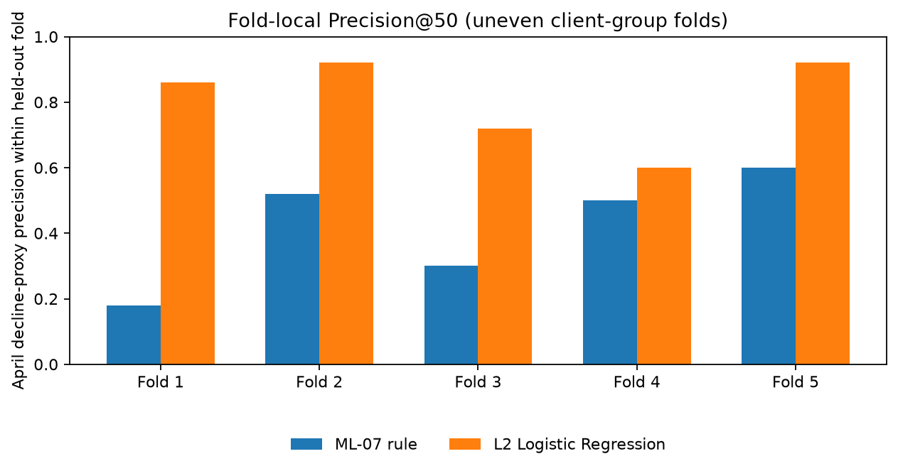
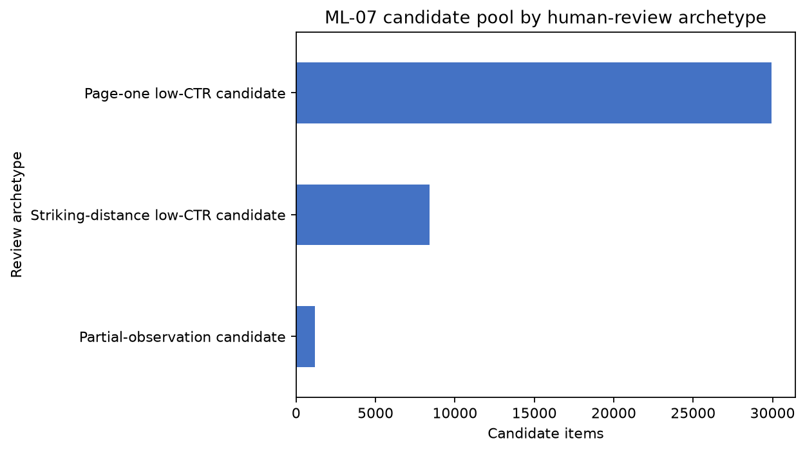

FlyRank’s Lane 2 content-opportunity problem is how to triage eligible pages with meaningful impressions but low click-through for human review. Using 95,633 paired page-client items from warehouse build v20260703, we evaluate the 39,545 items passing the ML-07 gate against an April impression-decline proxy. We compare an L2 Logistic Regression using March-only features with an ML-07 rule based on March impressions in five client-grouped folds. Fold-macro Precision@50 was 0.804 for the model and 0.420 for the rule, a 0.384 absolute difference or about 1.9 times the rule, and the model was higher in all five folds. This is a strong result against this specified rule on one selected retrospective cohort; it does not establish future-cohort performance, causal refresh impact, or traffic recovery after an edit.
1. Introduction and decision
FlyRank’s Lane 2 content-opportunity problem is turning Search Console signals into a practical editorial review order: among pages with at least 500 March impressions, positions from 1 to 20, and CTR below 0.5%, which should someone inspect first for snippet fit, query-page fit, or internal discovery? With limited review time, a ranking may help a team choose where to look first, while low CTR or an observed impression decline alone cannot diagnose stale content.
This case study compares a compact model with the transparent ML-07 rule that orders those eligible items by March impressions. The decision supported is which eligible page-client item to inspect first. It is not whether a page is stale, whether it needs a refresh, or whether an edit will improve search traffic. The target records an observed April impression change; it is not an intervention outcome.
2. Data
The source is release/build v20260703 of the gated Hugging Face FlyRank/internship-warehouse, table fact_content_daily_performance. Daily rows were aggregated to one page-client pair for March and April 2026. A pair was retained only when both months had at least 20 days with gsc_data_available IS TRUE and March impressions were positive. This produced 95,633 paired items; 47,323 (49.5%) met the April decline proxy before candidate selection.
The ML-07 candidate gate requires March impressions of at least 500, average position above 0 and at most 20, and CTR below 0.5%. It selected 39,545 items across 31 client groups. Within this selected pool, 55.2% met the proxy. Results below describe this selected pool only; they do not represent every page in the warehouse.
3. Methodology
Features and baseline
The learned model is L2-regularized Logistic Regression. Its five inputs are March log impressions, March log clicks, CTR, average position, and count of GSC-available days. Client and content IDs serve only for joins and client grouping; they are not predictors. April measurements and label-derived fields are excluded from features.
The transparent ML-07 baseline orders candidates by log1p(March impressions), using March clicks and average position as tie-breakers. Both approaches use the same candidate pool and April proxy.
Grouped evaluation and score comparability
W07 uses five-fold GroupKFold by client. For each fold, the model is fit on the other client groups and evaluated on held-out clients. Imputation, standardization, and Logistic Regression are refit within each fold. Since these are separate fitted models, their raw score scales are not assumed to be comparable across folds. We therefore report rankings and metrics within each held-out fold, and do not treat the pooled out-of-fold scores as one global top-K ranking.
W06 provides a separate single client-held-out comparison. Its values are presented separately and are not mixed with W07.
Target proxy: impressionsₐₚᵣ ≤ 0.80 × impressionsₘₐᵣ
4. Results against the baseline
W07 · fold-local grouped out-of-fold results
Within each held-out fold, model Precision@50 exceeded the rule’s value. The fold-level metrics show variation in prevalence and scale, so the macro means summarize five partitions descriptively; they are not confidence intervals.

| Fold | Held-out clients | Items | Base rate | Model P@10 | Rule P@10 | Model P@20 | Rule P@20 | Model P@50 | Rule P@50 | Model AUC | Rule AUC | Model AP | Rule AP |
|---|---|---|---|---|---|---|---|---|---|---|---|---|---|
| 1 | 1 | 11,069 | 0.484 | 0.800 | 0.200 | 0.800 | 0.200 | 0.860 | 0.180 | 0.603 | 0.448 | 0.583 | 0.438 |
| 2 | 1 | 9,435 | 0.733 | 0.800 | 0.600 | 0.850 | 0.550 | 0.920 | 0.520 | 0.652 | 0.447 | 0.819 | 0.695 |
| 3 | 6 | 6,384 | 0.420 | 0.800 | 0.300 | 0.800 | 0.350 | 0.720 | 0.300 | 0.632 | 0.444 | 0.544 | 0.375 |
| 4 | 7 | 6,347 | 0.547 | 0.500 | 0.600 | 0.550 | 0.500 | 0.600 | 0.500 | 0.606 | 0.490 | 0.622 | 0.536 |
| 5 | 16 | 6,310 | 0.543 | 1.000 | 0.800 | 1.000 | 0.700 | 0.920 | 0.600 | 0.687 | 0.359 | 0.706 | 0.464 |
Across-fold macro means, computed from unrounded fold metrics: P@10 0.780 vs 0.500; P@20 0.800 vs 0.460; P@50 0.804 vs 0.420; ROC-AUC 0.636 vs 0.438; average precision 0.655 vs 0.501 (model vs rule). Individual fold values in the table are rounded to three decimals, so averaging the displayed values may differ in the final decimal place. The folds are uneven: the first two each hold one client, while the fifth holds 16. These five partitions do not support a calibrated uncertainty interval or a claim of stable performance on a future cohort.
The existing W07 receipt also reports metrics after pooling all fold scores. Those values are not used here as the headline because they combine scores from separately fitted models and could compare items across non-comparable score scales. The fold-local table is the reported comparison.
W06 · separate single client-held-out diagnostic
On W06’s one held-out split (19,084 candidates; base rate 0.554), model P@10/P@20/P@50 was 0.80/0.75/0.72 versus 0.40/0.30/0.32 for the rule. ROC-AUC was 0.448 for both; average precision was 0.536 for both. This is a split-specific top-of-queue result, not a broad ranking improvement, and it is separate from W07.
W07 · review archetypes

5. Limitations and honest framing
- The target is an observed April impression decline proxy following March features. This single retrospective cohort does not establish early-warning ability or forecast performance across future months.
- The paired cohort requires at least 20 GSC-available days in both March and April. April availability is not a feature, but using it to define cohort membership means this exact cohort could not have been selected at a March-time decision point. This is a cohort-selection and decision-time limitation, not label leakage. The evaluation is not a live March queue or early-warning test.
- The analysis is conditional on the ML-07 gate and minimum GSC coverage; conclusions do not extend to excluded pages.
- Fold sizes and held-out client counts are uneven. Two folds contain one held-out client each, and five folds are too few to characterize client-to-client uncertainty precisely.
- Within-fold rankings avoid cross-model score comparison, but the macro fold mean remains descriptive and is not a statistical confidence interval.
- The score is not calibrated confidence or expected refresh lift. No experiment or causal design tests what happens after an edit.
- The feature set has no page age or refresh timestamp, current page text, query intent, conversion value, business priority, or intervention history. It cannot identify stale pages or assert that a particular page needs an edit.
Accordingly, use terms such as observed, measured, and directional. The ranking is decision support for a human review queue; it does not prove, cause, guarantee, or predict Google’s algorithm.
6. Ranked recommendations from W07
- Verify coverage before editing (1,201 candidates). Check that the page still exists and that both the page and GSC observations are current. Do not treat partial observation as a content problem.
- Review snippet and search intent (29,932 candidates). For page-one low-CTR items, inspect query mix, search-result features, title/snippet fit, and factual accuracy before considering a change.
- Review query-page fit and internal links (8,412 candidates). For striking-distance items, check intent alignment and internal discovery context. Use current page context to accept, revise, or reject the suggestion.
These action counts describe W07’s rule-based archetypes. They are not refresh outcomes. Do not automatically publish, delete, redirect, canonicalize, merge, or noindex a page from a score.
7. Reproducibility
The executed ML-11 capstone notebook and aggregate capstone report reconstruct the paired population, candidate gate, fold-local metrics, and safe aggregate figures. The source analyses are in the W03–W07 notebooks and the project repository.
Execution uses Python 3.11.9, NumPy 2.4.6, pandas 3.0.6, scikit-learn 1.9.1, and DuckDB 1.5.6. The model random seed is 42. Re-running requires approved access to the gated warehouse and a local ignored .env containing the Hugging Face token; the token is not included in the repository or paper. From the repository root, open the notebook in Jupyter and run all cells with the Python 3.11 kernel.
The action-queue CSV contains pseudonymous join keys and is for controlled internal use only. It is not linked or reproduced here. This page shows aggregate counts and fold metrics only.
8. Acknowledgments and data credit
Built on the FlyRank ML Internship dataset, with thanks to FlyRank for the internship program and access to the gated warehouse. The assigned March 2026 FlyRank SEO research paper is background context only; its portfolio findings are not results of this model.
Page structure and visual communication were informed by research on communicating with interactive articles. Image descriptions follow the W3C guidance for informative images; responsive layout and text alternatives are designed with WCAG 2.2 in mind. These references inform presentation, not the ML findings.